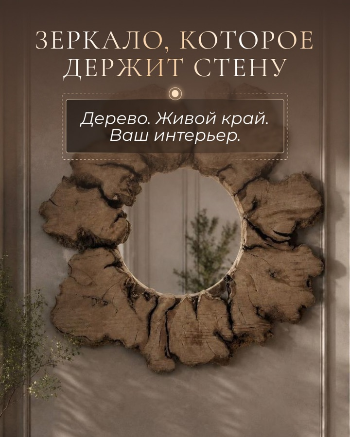
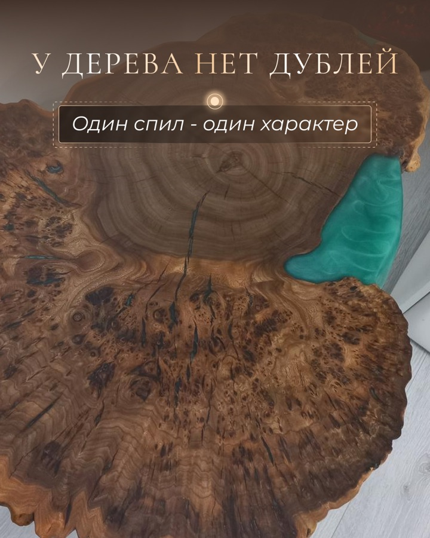

Авторская мебель · июль 2026
Как показать столы из дерева через интерьер, материал и понятный выбор
Для мастерской Юлии Якунович «Сияние вяза» собрали контент-партию, в которой изделие не остаётся просто красивой фотографией: каждый пост помогает представить его в своём доме и начать предметный диалог.
Кейс показывает готовый комплект прошлого цикла.



Задача месяца
Перевести красоту дерева в понятный путь к заказу
Людям легко оценить фактуру спила, но сложнее понять размер, форму, цвет смолы и место изделия в комнате. Контент разбирает выбор по шагам и снимает ощущение, что к мастеру нужно приходить с готовым техническим заданием.
Что нужно было показать
- стол выбирают под задачу и конкретную комнату;
- дерево может работать и без заметной смолы;
- рисунок каждого спила уникален;
- форму, размер и характер изделия обсуждают вместе с мастером;
- в ассортименте есть журнальные и обеденные столы, а также зеркала.
Как построили маршрут
Сначала связываем изделие с комнатой, затем даём критерии выбора. После этого раскрываем материал, показываем готовые работы и только потом приглашаем обсудить свою идею.
Логика: пространство → выбор → материал → пример → диалог.
Закулисье
Показать, как идея превращается в проект под конкретный интерьер.
Польза
Дать простые критерии выбора журнального столика.
Материалы
Раскрыть рисунок дерева и роль цвета смолы.
Работы
Показать столы и зеркала как часть живого интерьера.
Предложение
Перевести интерес в личное обсуждение изделия.
Готовый продукт
План и макеты в открытой галерее
В исходной папке — 8 одиночных макетов, 18 слайдов двух каруселей и 3 вертикальных кадра. Ниже показываем нейтральную продуктовую часть без личных данных и без неподтверждённых результатов.
10 тем · 5 рубрик
От комнаты к личному диалогу
Две карусели входят в общий порядок публикаций. Три дополнительных вертикальных кадра подготовлены отдельным бонусным форматом.
- Стол под заказ начинается с комнатыЗакулисье · доверие и диалог
- Три вопроса перед заказом журнального столикаПольза · карусель из 9 слайдов
- Как цвет смолы меняет характер столаМатериалы · показать выбор
- Зеркало из дерева в интерьереРаботы · интерес к новому формату
- Покажите интерьер — обсудим столПредложение · начать диалог
- Когда стол без смолы — лучший вариантПольза · снять лишние ожидания
- Что можно менять в проектеЗакулисье · карусель из 9 слайдов
- Обеденный стол, за которым хочется задержатьсяРаботы · показать изделие в жизни
- У дерева нет дублейМатериалы · уникальность спила
- Ваш стол может начаться с одного сообщенияПредложение · личный диалог
8 одиночных макетов
Один визуальный язык для разных задач
Тёплая палитра, крупная фактура и реальные изделия связывают ленту. Композиция меняется под интерьер, материал или предложение.
Польза в карусели
Три вопроса до выбора формы и цвета
Карусель раскладывает сложный выбор на короткие шаги: назначение, место в комнате и желаемый характер изделия.
01Поставить вопросНачать не с цвета, а с задачи. 03Определить рольЧай, книги, работа или гости. 07Собрать решениеПерейти к форме, размеру и оттенку. 09Пригласить к диалогуЗавершить простым следующим шагом.
Результат проекта
Готовый результат проекта
Кейс подтверждает состав, логику и готовый визуальный комплект. Для выводов о продажах нужны отдельные данные.
Что сделали
- план из 10 публикаций для действующего аккаунта;
- 8 одиночных постов и 2 карусели по 9 слайдов;
- 3 дополнительных вертикальных кадра;
- 29 финальных изображений в готовом комплекте прошлого цикла;
- подготовка материалов для VK, Telegram, MAX и Instagram.
Итог проекта
Кейс показывает готовый комплект из 10 публикаций и двух каруселей. Коммерческие показатели не измерялись.
Нужна своя контент-система?
Соберём темы, тексты и визуал в одну понятную партию
Маркетолог выстраивает маршрут, дизайнер делает комплект, менеджер ведёт процесс от материалов до передачи готового комплекта.